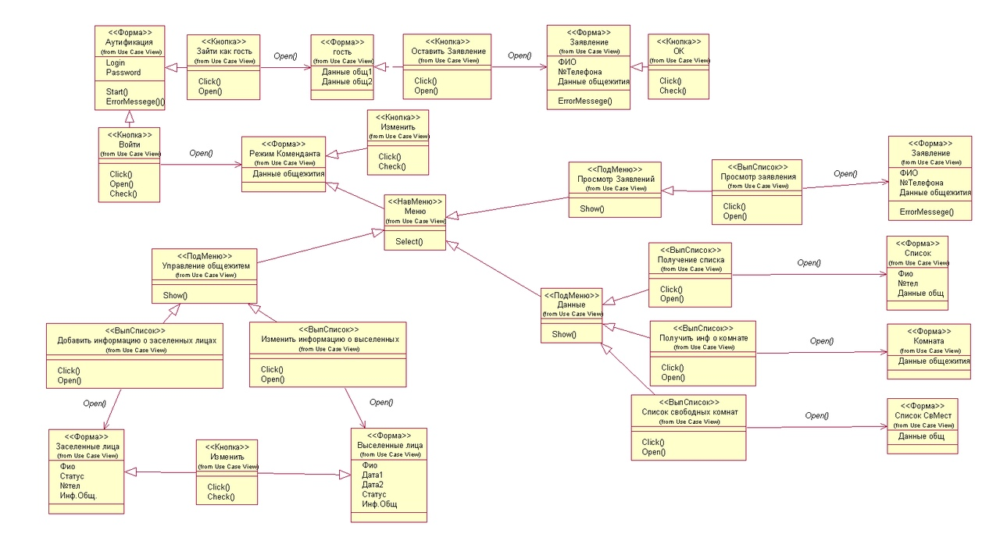
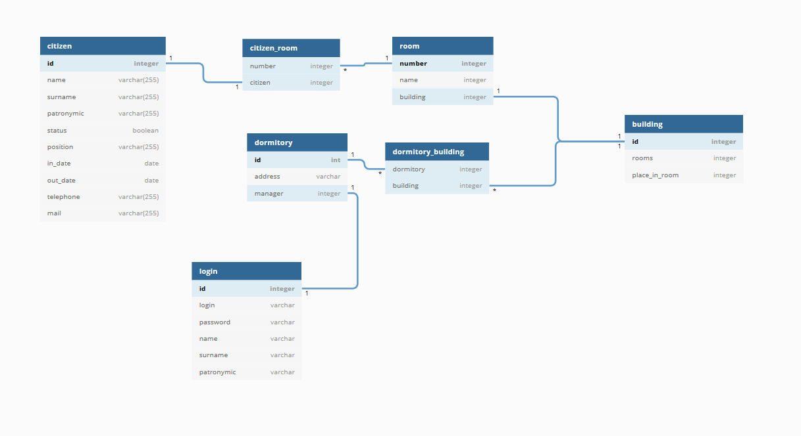

Справка программиста
Введение
Программа написана на языке C++ в среде разработки QT Creator версии 5.9.8 и выше. Разработка программы происходила на операционных системах Windows 7 и Windows 8.
Структура приложения
Диаграмма классов
Взаимодействие классов программы представлено на диаграмме классов:

Описание классов
DB
Класс DB состоит из следующих файлов: DB.h и DB.cpp. В классе DB присутствуют три класса: DB, Login и Citizen.
Класс DB содержит:
- Конструктор.
- Деструктор.
- Публичное статическое поле login типа Login.
- Приватное статическое поле *_db типа QSqlDatabase.
- Приватное поле *db типа QSqlDatabase.
Конструктор проверяет наличие соединения в статическом поле. При отсутствии соединения он создает его и передает нестатическому полю. Иначе он сразу передает соединение нестатическому полю.
Деструктор удаляет память, выделенную под поле db.
Класс Login содержит:
- Конструктор.
- Конструктор с параметрами login и pass типа QString.
- Деструктор.
- Приватное поле id типа int.
- Приватное поле dormitory типа int.
- Приватное поле address типа QString.
- Приватное поле name типа QString.
- Приватное поле surname типа QString.
- Приватное поле patronymic типа QString.
- Приватный статический метод check_login_pass типа bool с параметрами login и pass типа QString.
- Приватный метод get_id типа int.
- Приватный метод get_id_dormitory типа int.
Конструктор инициализирует поле name значением "Гость".
Конструктор с параметрами login и pass типа QString инициализирует поля id, name, surname, patronymic, dormitory, address данными из базы данных путем SQL запроса.
Метод get_id возвращает значение поля id.
Метод get_id_dormitory возвращает значение поля dormitory.
Класс Citizen содержит:
- Конструктор с параметром id типа int.
- Деструктор.
- Публичное поле id типа int.
- Публичное поле name типа QString.
- Публичное поле surname типа QString.
- Публичное поле patronymic типа QString.
- Публичное поле status типа bool.
- Публичное поле position типа QString.
- Публичное поле in_date типа QString.
- Публичное поле out_date типа QString.
- Публичное поле telephone типа QString.
- Публичное поле mail типа QString.
- Публичное поле room типа int.
- Публичный статический метод search типа QList с параметрами name, surname и patronymic типа QString.
- Публичный статический метод get_cojitel типа QSqlQueryModel* с параметрами citizens типа QList и parent типа QWidget*.
Конструктор с параметром id типа int инициализирует поля id, name, surname, patronymic, status, position, in_date, out_date, telephone, mail, room значениями из базы данных путем SQL запроса.
Метод search принимает значения полей name, surname, patronymic и ищет совпадения в базе данных. После он возвращает список типа Citizen с результатом.
Метод get_cojitel принимает список значений Citizen из метода search и ищет сожителей лиц, представленных в списке. Он возвращает значение типа QSqlQueryModel*, которое можно вывести в таблицу.
MainComendant
- Конструктор.
- Деструктор.
- Приватное поле *redactData типа RedactData.
- Приватное поле *view типа View.
- Приватное поле *seekByName типа SeekByName.
- Приватное поле *manageDatabase типа ManageDatabase.
- Публичный метод update без значения с аргументом типа bool.
- Приватный метод on_action_triggered без значения.
- Приватный метод on_action_2_triggered без значения.
- Приватный метод on_action_3_triggered без значения.
- Приватный метод on_action_4_triggered без значения.
- Приватный метод on_action_5_triggered без значения.
- Приватный метод on_action_6_triggered без значения.
- Приватный метод on_action_7_triggered без значения.
- Приватный метод on_action_8_triggered без значения.
- Приватный метод on_action_9_triggered без значения.
- Приватный метод on_pushButton_clicked без значения.
Конструктор устанавливает строку состояния, валидаторы на форму, а также заполняет форму значениями.
Метод update обновляет значения в форме после редактирования.
Метод on_action_triggered при выборе пункта меню "Добавить информацию о заселенных лицах" совершает SQL запрос в базу данных, создает объект manageDatabase, заполняет его данными и открывает его.
Метод on_action_2_triggered при выборе пункта меню "Изменить информацию о выселенных лицах" совершает SQL запрос в базу данных, создает объект manageDatabase, заполняет его данными и открывает его.
Метод on_action_3_triggered при выборе пункта меню "Получить список свободных мест" совершает SQL запрос в базу данных, создает объект view, заполняет его данными и открывает его.
Метод on_action_4_triggered при выборе пункта меню "Получить список свободных комнат" совершает SQL запрос в базу данных, создает view, заполняет его данными и открывает его.
Метод on_action_5_triggered при выборе пункта меню "Получить информацию о комнате" создает объект seekByName и открывает его.
Метод on_action_6_triggered при выборе пункта меню "Получить список проживающих" совершает SQL запрос в базу данных, создает объект view, заполняет его данными и открывает его.
Метод on_action_7_triggered при выборе пункта меню "Получить список заявок" создает объект requests и открывает его.
Метод on_action_8_triggered при выборе пункта меню "Справка пользователя" открывает html документ help_user.html.
Метод on_action_9_triggered при выборе пункта меню "Справка разработчика" открывает html документ help_developer.html.
Метод on_pushButton_clicked запускается при клике на pushButton. Данный метод создает объект redactData, связывает его сигнал redacted к методу update в MainComendant, и открывает его.
MainVisiter
- Конструктор.
- Деструктор.
- Приватное поле *makeRequest типа MakeRequest.
- Приватный метод on_pushButton_clicked без значения.
Конструктор задает строку состояния и записывает данные в форму путем нескольких SQL запросов.
Метод on_pushButton_clicked создает и открывает объект makeRequest.
MainWindow
- Конструктор.
- Деструктор.
- Приватное поле *mainvisiter типа MainVisiter.
- Приватное поле *maincomendant типа MainComendant.
- Приватный метод on_pushButton_2_clicked без значения.
- Приватный метод on_pushButton_clicked без значения.
Конструктор устанавливает режим пароля на элемент ввода пароля
Метод on_pushButton_2_clicked запускается при клике на pushButton_2 и создает объект mainvisiter, открывает его и после закрывает текущее окно.
Метод on_pushButton_clicked проверяет форму на предмет заполнения всех полей, после чего делает запрос в базу данных и ищет в ней введенные логин и пароль. В случае успеха создается и открывается объект maincomendant, а текущее окно закрывается.
MakeRequest
- Конструктор.
- Деструктор.
- Приватный метод on_pushButton_clicked без значения.
Конструктор устанавливает маски ввода и валидаторы на форму.
Метод on_pushButton_clicked проверяет форму на предмет полноты введенных данных, после проверяет их корректность. В случае успеха данные записываются в базу данных и выдается сообщение об успехе. Иначе выдаются сообщения о проблемах.
ManageDatabase
- Конструктор.
- Деструктор.
- Приватное поле *model типа QSqlQueryModel.
- Приватное поле *redactHuman типа RedactHuman.
- Приватное поле old типа bool.
- Приватный метод on_redact_button_clicked без значения.
- Публичный метод update_human без значения с аргументом типа bool.
- Публичный метод setTitle без значения с аргументом типа QString.
- Публичный метод set_model без значения с аргументом типа QSqlQueryModel.
Конструктор инициализирует поле old.
Метод on_redact_button_clicked создает объект redactHuman, связывает сигнал redactHuman redacted_human типа bool с методом update_human объекта manageDatabase, после чего открывает объект redactHuman.
Метод update_human с аргументом типа bool ловит сигнал redacted_human типа bool и обновляет данные в форме путем совершения SQL запроса.
Метод setTitle получает значение из MainComendant и задает строку состояния.
Метод set_model объект типа QSqlQueryModel и задает его таблице.
RedactData
- Конструктор.
- Деструктор.
- Сигнал redacted без значения с аргументом типа bool.
- Приватный метод on_pushButton_clicked без значения.
- Приватный метод on_pushButton_2_clicked без значения.
Конструктор устанавливает валидаторы на компоненты формы и заполняет их данными из базы данных.
Метод on_pushButton_clicked запускается при клике на кнопку pushButton. Метод проверяет корректность входных данных и в случае успеха записывает данные в базу данных.
Метод on_pushButton_2_clicked запускается при клике на кнопку pushButton_2 и закрывает текущее окно.
RedactHuman
- Конструктор.
- Деструктор.
- Приватное поле citizen_id типа int.
- Приватное поле old типа bool.
- Сигнал redacted_human без значения с аргументом типа bool.
- Приватный метод on_redacted_clicked без значения.
- Приватный метод isData типа bool с аргументом типа QString.
- Приватный метод on_building_combobox_currentIndexChanged без значения с аргументом типа int.
Конструктор устанавливает валидаторы на компоненты формы и заполняет их данными из базы данных.
Метод on_redacted_clicked запускается при клике на кнопку redacted и проверяет входные данные на корректность и в случае успеха записывает данные в базу данных.
Метод isData проверяет корректность введенной даты.
Метод on_building_combobox_currentIndexChanged заполняет данными элемент формы ComboBox.
Requests
- Конструктор.
- Деструктор.
- Публичный метод setTitle без значения с аргументом типа QString.
Конструктор считывает данные из базы данных путем SQL запроса и выводит в таблицу.
Метод setTitle получает значение из MainComendant и задает строку состояния.
SeekByName
- Конструктор.
- Деструктор.
- Публичный метод setTitle без значения с аргументом типа QString.
- Приватный метод on_Enter_FIO_clicked без значения.
Конструктор устанавливает валидаторы на элементы формы.
Метод setTitle получает значение из MainComendant и задает строку состояния.
Метод on_Enter_FIO_clicked запускается при клике на кнопку Enter_FIO и запускает метод search класса Citizen, после запускает метод get_cojitel класса Citizen.
View
- Конструктор.
- Деструктор.
- Публичный метод setTitle без значения с аргументом типа QString.
- Публичный метод set_model без значения с аргументом типа QSqlQueryModel.
Метод setTitle получает значение из MainComendant и задает строку состояния.
Метод set_model принимает объект типа QSqlQueryModel и задает его таблице.
Описание интерфейса
MainComendant
Форма maincomendant.ui содержит следующие элементы:
- dormitory_groupbox - содержит элементы и выводит номер общежития.
- address_label - выводит адрес общежития.
- comendant_label - выводит ФИО коменданта общежития.
- building_1_label - выводит номер первого корпуса.
- room_amount_1_label - выводит количество комнат в первом корпусе.
- place_amount_1_label - выводит количество мест в комнатах первого корпуса.
- building_2_label - выводит номер второго корпуса.
- room_amount_2_label - выводит количество комнат во втором корпусе.
- place_amount_2_label - выводит количество мест в комнатах второго корпуса.
- pushButton - открывает окно redactdata.ui.
- state_label - строка состояния.
MainVisiter
Форма mainvisiter.ui содержит следующие элементы:
- dormitory1_groupbox - содержит элементы и выводит номер первого общежития.
- address1_label - выводит адрес первого общежития.
- comendant1_label - выводит ФИО коменданта первого общежития.
- building11_label - выводит номер первого корпуса первого общежития
- room_amount11_label - выводит количество свободных комнат первого корпуса первого общежития.
- building12_label - выводит номер второго корпуса первого общежития.
- room_amount12_label - выводит количество свободных комнат второго корпуса первого общежития.
- dormitory2_groupbox - содержит элементы и выводит номер второго общежития.
- address2_label - выводит адрес второго общежития.
- comendant2_label - выводит ФИО коменданта второго общежития.
- building21_label - выводит номер первого корпуса второго общежития
- room_amount21_label - выводит количество свободных комнат первого корпуса второго общежития.
- building22_label - выводит номер второго корпуса второго общежития.
- room_amount22_label - выводит количество свободных комнат второго корпуса второго общежития.
- pushButton - открывает окно makerequest.ui.
- state_label - строка состояния.
MainWindow
Форма mainwindow.ui содержит следующие элементы:
- login_label - выводит текст "Введите логин".
- login_edit - элемент для ввода логина.
- password_label - выводит текст "Введите пароль".
- password_edit - элемент для ввода пароля.
- pushButton - открывает окно maincomendant.ui.
- pushButton_2 - открывает окно mainvisiter.ui.
MakeRequest
Форма makerequest.ui содержит следующие элементы:
- surname_label - выводит текст "Введите фамилию".
- surname_edit - элемент для ввода фамилии.
- name_label - выводит текст "Введите имя".
- name_edit - элемент для ввода имени.
- patronymic_label - выводит текст "Введите отчество (при отсутствии можно опустить)".
- patronymic_edit - элемент для ввода отчества.
- status_groupbox - группирующий элемент, выводит текст "Вы студент или сотрудник?".
- student_radio - элемент выбора опции "Студент".
- sotrudnik_radio - элемент выбора опции "Сотрудник".
- group_work_label - выводит текст "Если вы студент, укажите вашу группу. Если вы сотрудник, укажите вашу должность.".
- group_work_edit - элемент для ввода статуса.
- phone_label - выводит текст "Укажите ваш номер телефона".
- phone_edit - элемент для ввода телефона.
- mail_label - выводит текст "Укажите ваш адрес элемтронной почты".
- mail_edit - элемент для ввода электронной почты.
- pushButton - запускает редактирование данных.
ManageDatabase
Форма managedatabase.ui содержит следующие элементы:
- tableView - таблица для вывода данных.
- redact_button - запускает редактирование данных.
- state_label - строка состояния.
RedactData
Форма redactdata.ui содержит следующие элементы:
- address_label - выводит текст "Введите адрес общежития".
- address_edit - элемент для ввода адреса.
- surname_label - выводит текст "Введите фамилию коменданта".
- surname_edit - элемент для ввода фамилии.
- name_label - выводит текст "Введите имя коменданта".
- name_edit - элемент для ввода имени.
- patronymic_label - выводит текст "Введите отчество коменданта (необязательное поле)".
- patronymic_edit - элемент для ввода отчества.
- building1_label - выводит текст "Корпус № 0".
- room_amount1_label - выводит текст "Введите количество комнат".
- room_amount1_edit - элемент для ввода количества комнат.
- place_amount1_label - выводит текст "Введите количество мест в комнате".
- place_amount1_spinbox - элемент для ввода количества мест в комнате.
- building2_label - выводит текст "Корпус № 0".
- room_amount2_label - выводит текст "Введите количество комнат".
- room_amount2_edit - элемент для ввода количества комнат.
- place_amount2_label - выводит текст "Введите количество мест в комнате".
- place_amount2_spinbox - элемент для ввода количества мест в комнатах.
- pushButton - при клике принимает изменения.
- pushButton_2 - отмена.
RedactHuman
Форма redactdata.ui содержит следующие элементы:
- surname_label - выводит текст "Фамилия".
- name_label - выводит текст "Имя".
- patronymic_label - выводит текст "Отчество".
- status_label - выводит текст "Статус".
- status_edit - элемент для ввода статуса.
- data_in_label - выводит текст "Дата заселения".
- data_out_label - выводит текст "Дата выселения".
- data_out_edit - элемент для ввода даты.
- building_number_label - выводит текст "Номер корпуса".
- building_comboboxl - элемент для ввода номера корпуса.
- room_number_label - выводит текст "Номер комнаты".
- room_combobox - элемент для ввода номера комнаты.
- phine_label - выводит текст "Номер телефона".
- phone_edit - элемент для ввода номера телефона.
- mail_label - выводит текст "Электронная почта".
- mail_edit - элемент для ввода элеатронной почты.
- redacted - кнопка. Запускает метод редактирования.
Requests
Форма requests.ui содержит следующие элементы:
- tableViewl - таблица для вывода данных.
- state_label - строка состояния.
SeekByName
Форма seekbyname.ui содержит следующие элементы:
- surname_label - выводит текст "Введите фамилию".
- name_label - выводит текст "Введите имя".
- patronymic_label - выводит текст "Введите отчество".
- surname_edit - элемент для ввода фамилии.
- name_edit - элемент для ввода имени.
- patronymic_edit - элемент для ввода отчества.
- Enter_FIO - кнопка для ввода данных.
- tableView - таблица для вывода данных.
- state_label - строка состояния.
View
Форма view.ui содержит следующие элементы:
- tableView - таблица для вывода данных.
- state_label - строка состояния.
Структура базы данных
В качестве базы данных приложения была использована база данных SQLite 3 версии. Структура базы данных представлена на диаграмме:
